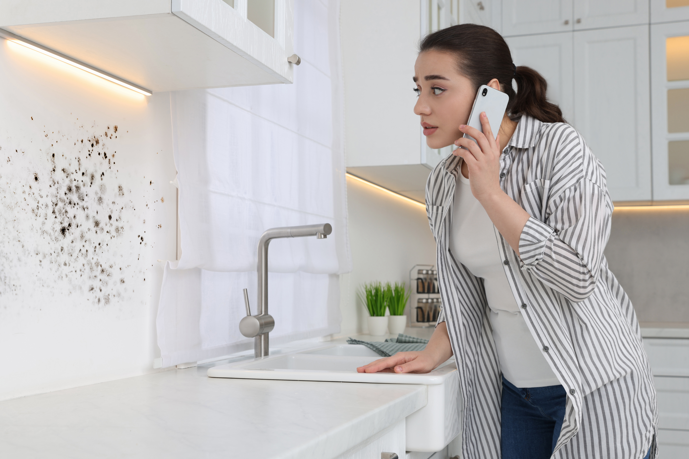

Our mold removal and mold remediation company offers professional mold inspection and remediation services that help homeowners detect hidden mold behind walls, stop it from spreading, and restore a safe, healthy living environment.
Mold doesn’t always grow where you can see it. In many homes, it develops quietly behind drywall, under insulation, or inside wall cavities—often going unnoticed until the damage becomes serious. If you’re wondering how to tell if mold is behind walls, the key is recognizing early warning signs before the problem spreads. Catching hidden mold early can save you from costly repairs, poor air quality, and long-term structural damage.
One of the most common signs of mold behind walls is a persistent musty odor. If a room smells damp or earthy even after cleaning, it often means mold is growing somewhere out of sight. These odors tend to be stronger in enclosed areas or near plumbing fixtures.
Discoloration is another clue. Stains that appear on walls or ceilings—especially those that grow over time—can indicate moisture buildup and hidden mold. Even faint yellow, brown, or gray spots may signal a deeper issue behind the surface.
You may also notice that certain areas feel damp or humid compared to the rest of your home. Uneven humidity levels can point to trapped moisture inside walls, creating the perfect environment for mold growth.
Mold almost always starts with moisture. Leaks from plumbing, roof damage, or past flooding can leave water trapped inside wall cavities long after surfaces appear dry.
When water enters drywall or insulation, it creates a hidden space where mold can grow undisturbed. In fact, mold can begin forming within 24 to 48 hours after water exposure. Without proper water damage restoration, this moisture remains inside the structure and allows mold to spread behind walls.
Even small, slow leaks—like a dripping pipe—can lead to significant mold growth over time. These issues often go unnoticed until signs begin to appear on the surface.
Hidden mold doesn’t just damage your home—it can also affect your health. If you or others in your household are experiencing unexplained symptoms, mold behind walls could be the cause.
Common symptoms include:
If these symptoms improve when you leave the house, it may indicate poor indoor air quality caused by hidden mold. Identifying and removing the source is essential for restoring a healthy living environment.
Even though mold is hidden, there are visible signs that can point to a problem behind drywall. Pay attention to changes in the appearance or condition of your walls.
Look for:
These issues often indicate moisture trapped behind the wall, which is one of the main causes of hidden mold growth.
While cutting into walls may seem like the only way to confirm mold, there are non-invasive methods professionals use to detect hidden problems.
Moisture meters can identify elevated moisture levels inside walls, even when surfaces appear dry. Thermal imaging cameras detect temperature differences that indicate trapped moisture. Air quality testing can also measure mold spores in the air, helping identify hidden contamination.
These tools allow professionals to locate mold accurately without unnecessary damage to your home.
Homeowners often rely on visual inspection or DIY test kits to detect mold, but these methods have limitations. Mold test kits may confirm the presence of spores, but they don’t show where the mold is growing or how severe the problem is.
DIY inspections also tend to focus on visible areas, leaving hidden mold behind walls undetected. Without proper tools and experience, it’s easy to underestimate the extent of the issue.
Professional inspections provide a complete assessment, ensuring no hidden areas are overlooked.
If you suspect mold behind your walls, calling a professional is the safest and most effective option. Delaying action allows mold to spread further into structural materials, increasing both damage and repair costs.
You should schedule a professional inspection if:
A professional mold remediation team can identify the source, contain the affected area, and remove mold safely without spreading spores.
When mold is confirmed behind walls, remediation involves more than surface cleaning. A controlled process is used to remove contamination and restore the area safely.
This typically includes:
The goal is to eliminate mold at its source and ensure it does not return.
If you’re looking for a reliable way to detect and remove mold behind walls, S.W.A.T. Restoration is ready to help. Our team provides expert inspections, advanced moisture detection, and professional mold remediation services designed to eliminate hidden mold and restore your home safely.
Don’t wait for mold to spread or cause more damage. Contact S.W.A.T. Restoration today for a thorough inspection and get peace of mind knowing your home is clean, safe, and protected.